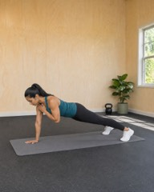
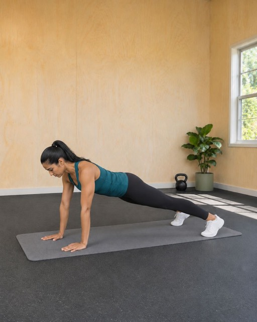
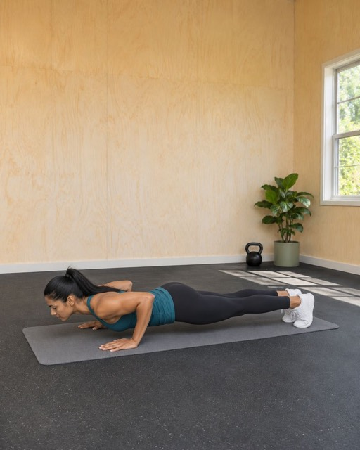
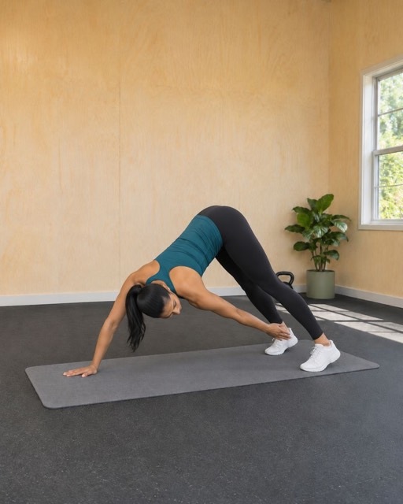
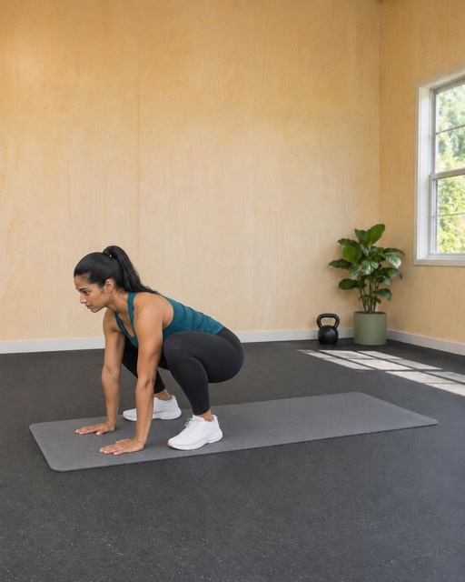
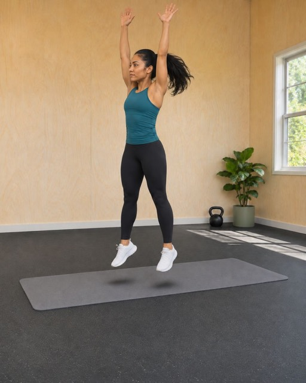

1Arms straight under the shoulders, body in one line from head to heels, feet hip-width apart.

2Lower your chest close to the floor, elbows back, then push up. Don't let the hips sag.
At the top, tap the opposite shoulder with one hand, then the other. Hips stay square to the floor.

4Lift the hips into an inverted V and reach one hand to the opposite foot. Switch sides every rep.

5Jump the feet in next to the hands into a deep squat, chest lifting.

6Drive through the floor and jump, arms overhead. Back down to the plank and go again: 30 seconds, 10 s rest, 5 rounds.